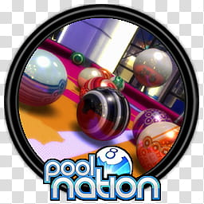

Pool NationDetalles
 |
|
| Tiempo de juego | 9m 26s |
| Última actividad | 11/12/2025 22:48:55 |
| Añadido | 20/11/2025 17:36:51 |
| Modificado | 20/11/2025 17:38:20 |
| Estado de finalización | Jugado |
| Librería | Playnite |
| Fuente | |
| Plataforma | PC (Windows) |
| Fecha de lanzamiento | 31/10/2012 |
| Puntuación de la Comunidad | 72 |
| Puntuación de la Crítica | 78 |
| Puntuación de usuario | |
| Género | Simulator Sport |
| Desarrollador | Cherry Pop Games |
| Editor | Cherry Pop Games Mastertronic Group Ltd |
| Característica | Multiplayer Single Player |
| Enlaces | Steam |
| Tag | |
Descripción
Llegando sobre la hora para cerrar el 2012 (salió a finales de ese año), Pool Nation se plantó como el referente gráfico indiscutido del género. Mientras otros buscaban el realismo sobrio, este juego apostó por el espectáculo visual y la diversión adictiva.
Es billar, pero con un nivel de pulido y "glamour" que no vas a encontrar en otro lado.
Estilo y Sustancia
- Gráficos "Glossy": Es lo primero que vas a notar. El acabado visual es impresionante para la época. Las bolas tienen un brillo hiperrealista, los reflejos en la madera pulida y la iluminación ambiental crean una atmósfera moderna y elegante. Es un "caramelo visual".
- Modo ENDURANCE (Resistencia): ¡La verdadera droga de este juego! Olvidate de las reglas de torneo por un rato. En este modo, las bolas siguen apareciendo en la mesa constantemente. Tu objetivo es meterlas más rápido de lo que aparecen. Si la mesa se llena, perdés. Es frenético y un vicio total.
- Física Sólida pero Divertida: Usa un motor de física propio que respeta la inercia y los efectos de rotación, pero es un poco más "amigable" que un simulador hardcore. Te permite hacer tiros espectaculares sin frustrarte tanto.
- Trick Shots y Slow Motion: El juego te incentiva a hacer tiros de fantasía (saltos, curvas) y te premia con repeticiones en cámara lenta (bullet time) que son cine puro. Ver cómo la bola se deforma mínimamente al impactar es un detalle genial.
Pool Nation es la opción ideal si querés un juego que entre por los ojos, que corra bárbaro en hardware de 2012 y que tenga modos de juego rápidos para desafiar tus reflejos.